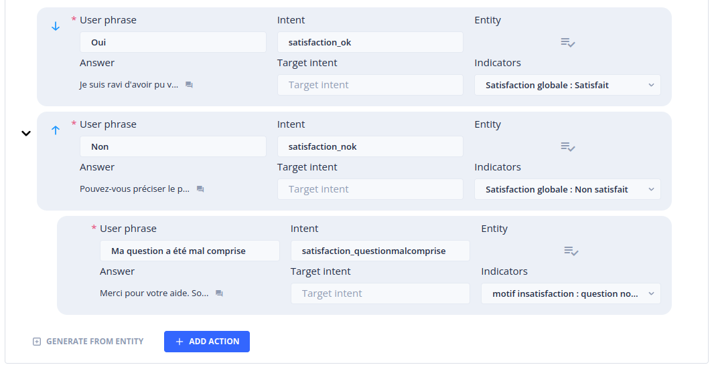

The Custom Metrics menu
The Custom Metrics menu allows you to create and view statistics on the consultation and use of Tock stories.
It is intended for a business audience that wants to monitor the performance of stories (FAQs, scenarios, etc.) within a Tock application.
To access this page, you must have the botUser role.
Metrics tab
This page allows you to display a certain number of business-oriented statistics (unlike the Analytics menu, whose statistics relate to technical criteria).
The statistics are displayed for a given period, which can be specified using the field at the top of the page. On its right, a set of shortcuts allow you to define this period in one click (last 3 days, last 7 days, last 30 days and last 3 months).
Then, for the selected period, come the following statistics:
- Number of user messages
- Number of answers provided by the bot
- Number of questions not understood by the bot
- Bot response rate

To obtain reliable and correctly broken down statistics, it is necessary to create an unknown story (see section Create an Unknown story).
Section Number of user messages
This graph displays the number of user messages per day for the requested period
Section Distribution of stories
This graph displays the distribution of stories triggered following user questions. Hovering over the graph entries allows you to obtain the number of times the story was triggered as well as the share taken by this story in the total number of stories triggered for the requested period.
If the number of stories to display exceeds a certain threshold, an Other stories category will be displayed, bringing together the stories that recorded the lowest trigger rates.
Clicking on any of the graph entries opens a window displaying these same statistics in a detailed list (and possibly displaying the details of the Other stories)
To the right of the section title, a drop-down menu allows you to filter the stories displayed by type and/or category. It also allows you to display stories metrics that are not listed by default.
Section Indicators
Indicators, associated with metrics stories, allow you to record user feedback, generally as part of a satisfaction story or a survey. For more information on creating indicators and assigning them to metrics stories, refer to the Indicators and Metrics Stories sections
A drop-down list to the right of the section title allows you to select the indicator dimension to display. A dimension is a collection of indicators (see Indicators tab).
For each indicator in the chosen dimension, a graph displays the distribution of user responses. The gray No answer given section corresponds to the number of times a user did not answer the question asked. Hovering over the portions of the graph displays the number of responses provided for each indicator option as well as the percentage represented of all times the corresponding question was asked.
For each graph, a Detail by story button is provided. Detail by story displays a window gathering the graphs of the responses given to this indicator by story.
Indicators tab {#indicators-tab}
Indicators are used to measure user satisfaction or to conduct surveys.
An indicator generally corresponds to a question that will be asked to users after the execution of a story. It gathers one or more values corresponding to the possible responses to this question.
Once defined, the indicators can be associated with Actions of Metric story. The Metric story can in turn be defined as a satisfaction story of your FAQs or other types of stories. For more information on the definition of Metric story, refer to the section Metrics Stories.
This page lists all the existing indicators.
An indicator is composed of the following elements:
- Its label
- The dimension to which it belongs
- Its possible values
An indicator must necessarily belong to at least one dimension but the same indicator can belong to several different dimensions. Dimensions are simple groupings of indicators facilitating their manipulation and consultation.
The following actions are available for each indicator:
- Edit: allows you to modify the attributes of the indicator (label, description, dimensions, values)
- Delete: allows you to delete the indicator. Note that deleting an indicator will prohibit viewing the statistics recorded for this indicator.
Creating an indicator
You can create a new indicator by clicking on the + New Indicator button at the top right of the page. This opens a panel in which you can define:
- The indicator label
- A description (optional)
- One or more dimensions to which the indicator will be attached
- One or more values that the indicator is likely to carry
For example, we can imagine a "Satisfaction" indicator that carries the values "Satisfied" and "Not satisfied".
Note that the name of the indicator and its values will not be directly displayed to users. The question and answer sentences will be defined at the level of the actions of the Metric story that you will be required to create in the next step. You can therefore choose a label and simple values that will facilitate their manipulation.
As an example, we can imagine a dimension that brings together the following indicators and values:
- DIMENSION: Satisfaction
- INDICATOR: Overall satisfaction
- VALUE: Satisfied
- VALUE: Not satisfied
- INDICATOR: Reason for dissatisfaction
- VALUE: Question not understood
- VALUE: Incorrect answer
- INDICATOR: Dissatisfaction action
- VALUE: Redirect to a human
- VALUE: Reformulate my question
Based on this set of indicators, we can configure a Metric story asking a set of questions to users and recording their answers with the aim of improving our Bot (see Metrics Stories).
Filters
It is possible to search for indicators by entering text in the Search field.
It is also possible to filter the list of indicators by selecting one or more dimensions in the drop-down list.
Create a Story Unknown {#create-unknown-story}
In order to explicitly distinguish user questions not understood by the bot, it is necessary to create a story unknown. This story will be returned by the bot in cases where it has not identified an intent corresponding to the user questions. The story unknown also allows you to provide a message to display to the user in the event that their question has not been understood.
To create a story unknown, go to Stories & Answers in the main menu and access the New story tab.
In the field provided, give a name to your story unknown (for example story unknown) and click on the add button.
On the page that appears, click on the Edit story button.

A window opens. In the Intent field, enter the string unknown and click Save.
In the Answers section, enter the answer to return to users when their question has not been understood, then click Create story.
Metrics Stories {#metrics-stories}
Once defined, the indicators must be associated with the actions of a story in order to be triggered by users and thus result in the recording of a hit.
Creating a satisfaction Metrics Story
From the main menu, go to Stories & Answers then to the New story tab.
In the field provided, enter the name of your satisfaction story (for example Story satisfaction) then validate.
In the Answer field, enter a user prompt (e.g. Are you satisfied with the answer provided?)
In the Actions section, add a first action using the + Add action button:
Define the User phrase of the action (e.g. Yes).
Indicate an Intent name for the action (e.g. satisfaction_ok). A window appears to validate the creation of the intent. Validate by clicking on the Create button.
Enter a response using the Answer field of the action (e.g. I am delighted to have been able to help you).
In the Indicators list, select the value of the indicator provided for this purpose (in our example, Overall satisfaction: Satisfied).

Repeat for the "Not satisfied" action:
In the Actions section, add a second action using the + Add action button.
Define the User phrase of the action (e.g. No).
Indicate an Intent name for the action (e.g. satisfaction_nok).
Enter a response using the Answer field (e.g. Can you specify the problem encountered?).
In the Indicators list, select the value of the indicator provided for this purpose (in our example, Overall satisfaction: Not satisfied).

You will now be able to define the Actions to propose to users who answered No to the initial question:
Using the mouse, hover over the second action created with the user phrase No. A contextual menu appears at the bottom of the action. Click on Add action. Expand the action using the chevron that appears to the left of it.
Define the User phrase of the action (for example My question was misunderstood).
Indicate an Intent name for the action (for example satisfaction_questionmisunderstood).
Enter an answer using the Answer field (for example Thank you for your help. Would you like to try to rephrase your question or be put in touch with an advisor?).
In the Indicators list, select the value of the indicator provided for this purpose (in our example, Overall satisfaction: question not understood).

Continue the operations described above until you have completely defined your satisfaction story according to the desired indicators.
Now that you have assigned at least one indicator to an action, you have the possibility to mark this story as a Metric story using the switch located at the top right of the Actions section.

You can now validate the creation of the Metric story by clicking on the Create story button at the bottom of the page.
A story marked as Metric story allows you to record the satisfaction for the story previously triggered by the user. A Metric story must therefore be defined as a story for redirecting business stories. The indicators recorded following user responses will therefore refer to the story that was executed just before the _Metric story was triggered. If indicators are associated with the actions of a story not marked as Metric story, the statistics recorded will only concern the story carrying these actions.
Defining a Metric Story as a redirection story
To define a Metric Story as a story for redirecting all your FAQs, go to the Faq Management entry using the main menu.
Click on the Faq parameters icon at the top right of the page.

Enable the Ask for satisfaction after answering on FAQ question checkbox then select the Metric story previously created.

Click on the Save button.
From now on, after each execution of a story of type Faq, the story "Story satisfaction" will be triggered and will allow to ask users for feedback.
For a more precise adjustment of the stories giving rise to a redirection, go to Stories & Answers, Rules tab